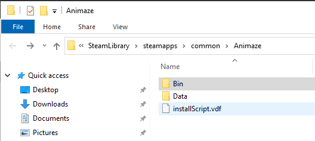
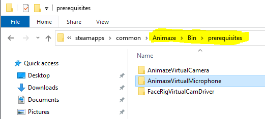
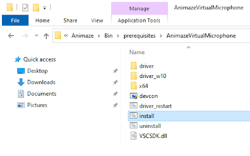
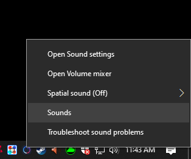
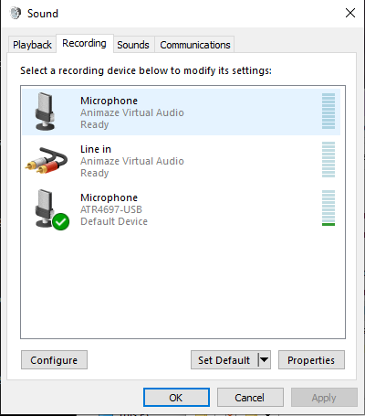
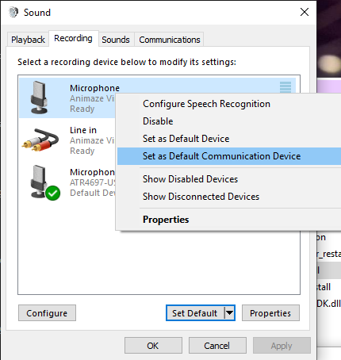
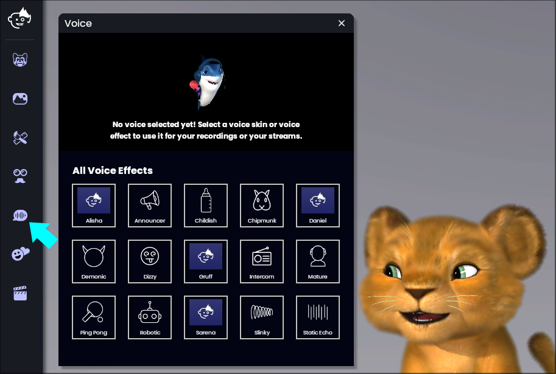
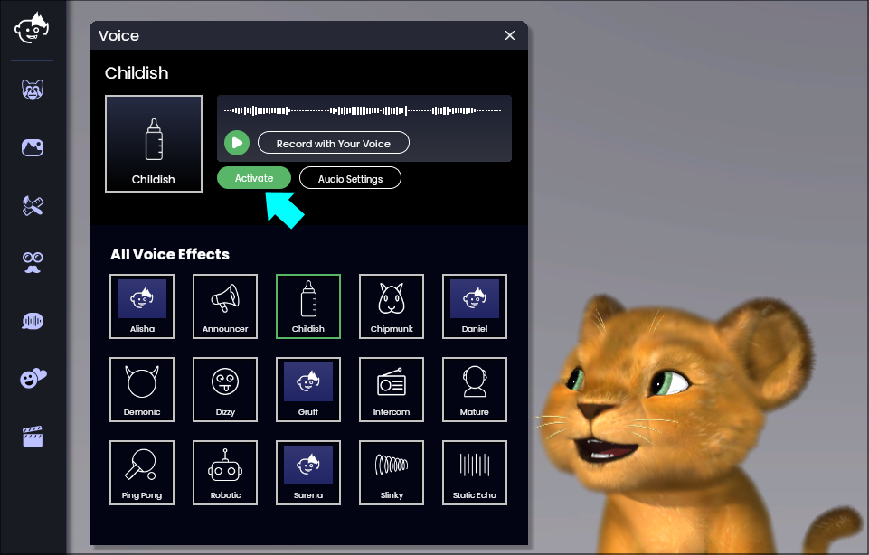
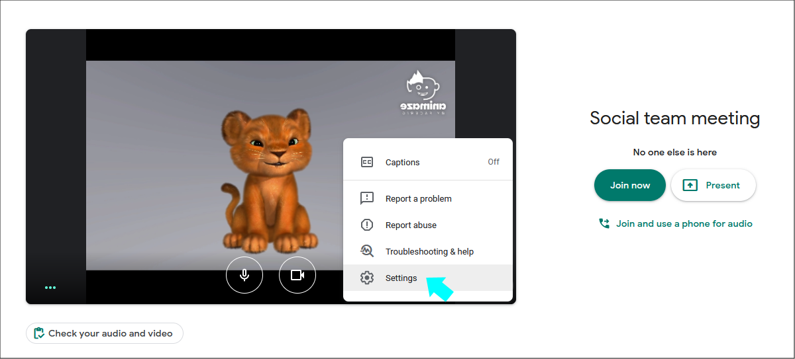
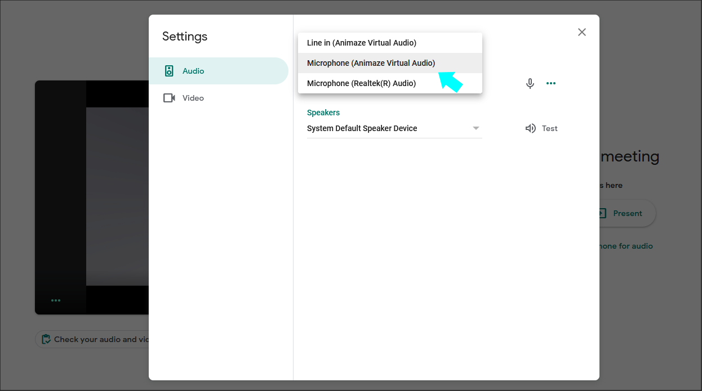

音声効果を使って放送する方法
Animazeアプリがお使いのコンピュータにインストールされている必要があります

Steamアプリで、Animazeアプリを右クリックし、「設定」 -> 「ローカルファイルの参照」の順にクリックします

Binフォルダーを開きます

Binフォルダー内のprerequisitesフォルダーを開き、AnimazeVirtualMicrophoneフォルダーを開きます

Animazeバーチャルマイクのインストールファイルを選択します

サウンドオプションを右クリックし、サウンドパネルを開きます

お使いのマイクをデフォルトに設定します

Animazeバーチャルマイクをデフォルトの通信デバイスに設定します

Animazeを開きます

音声効果パネルを開きます

任意のエフェクトを有効にします

Animazeバーチャルマイクを放送に使用するソフトウェアの通信経路として設定してください


これでAnimazeアプリを使って放送できます